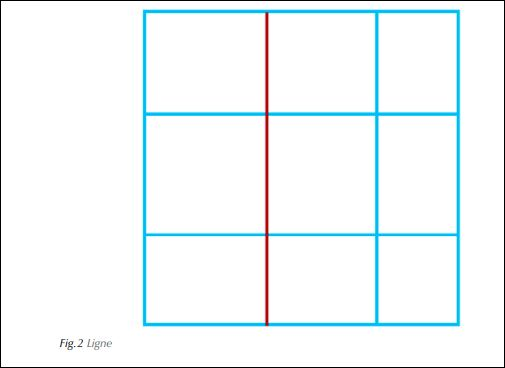
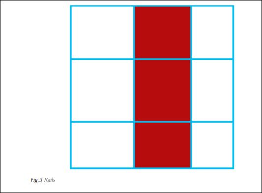
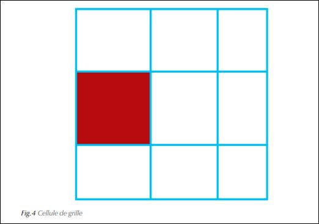

CSS Grid Layout
Definition
CSS Grid Layout est à ce jour la méthode de mise en page la plus avancée qui peut fournir le CSS. La plupart des navigateurs supportent CSS Grid Layout depuis mars 2017 et octobre 2017 pour Edge. Les versions smartphones ont suivi ou suivent peu à peu. On peut donc théoriquement l’utiliser en production.
Avec Grid Layout on va pouvoir définir très précisément la place des éléments sur une grille virtuelle (rangées et colonnes) de manière beaucoup plus simple qu’avec un système de grille tel que nous avons étudié plus tôt. En effet, on peut demander à un élément d’être à cheval sur plusieurs rangées et/ou plusieurs colonnes et celles-ci vont s’adapter les unes aux autres de manière harmonieuse.
Dans le même ordre d’idées, on va pouvoir modifier la place et la position d’un élément, chose très appréciable pour modifier la configuration de page dans le cadre du web responsive.
I les notions fondamentatles
A. Grid-containers et grid-items
Tout comme on a distingué dans le modèle flexbox, le flex-container des flex-items, on va ici différencier un grid-container (le parent) des grid-items (les enfants).
On retrouve ici le fonctionnement du modèle flexbox: des règles sont appliquées sur le grid-container quand d’autres le sont pour les grid-items. De plus, un grid-item peut à son tour être transformé en grid-container.
Dans le chapitre sur les grilles de mise en page, on a vu que cette opération pouvait se montrer délicate, en particulier lorsque la grille possède une gouttière. Le modèle de grille CSS facilite grandement cette opération.
Il faut tout d’abord éclaircir certaines notions de base en représentant une grille sommaire comme suit:

Chaque trait bleu et carré ainsi dessinés ont leur importance: ce sont les éléments fondamentaux de la grille.
B. Les éléments constitutifs de la grille
Suivant l’article fondateur de Rachel Andrew, on peut décrire certaines parties de la grille de l’image précédente en précisant plusieurs termes ou notions:
Ligne (grid line en rouge sur l’image): ce sont les lignes virtuelles qui composent la grille (verticales ou horizontales).
Rails (grid track) ou piste en français: ils sont composés de deux lignes parallèles (horizontales ou verticales) comme une voie de chemin de fer; il s’agit donc des colonnes et des rangées.
Cellule de grille (grid cell): c’est le même principe qu’une cellule de tableau (td ou th). Elle est donc définie par les 4 lignes les plus proches qui s’entrecroisent pour composer l’unité minimale de notre grille.
Zone, ou périmètre de grille (grid area): elle est définie également par 4 lignes qui s’entrecroisent, mais est composée d’au moins deux cellules.

II. Grilles sommaires
A. Grille sommaire: 3 colonnes et 1 rangée
Ici on crée une grille simple. Pour cela on travaille uniquement sur le grid-container. voire: CssGrid -> exemples-01 Fig 6 et 7
Le code HTML

On a un grid-container, parent de trois grid-items, qui est défini grâce à display: grid.
La règle inline-grid existe sur le modèle de inline-flex ou inline-block, permettant de définir un élément de grille à côté d’un élément qui n’en serait pas.
Ensuite on définit nos colonnes avec grid-template-columns et nos rangées avec grid-template-rows.
Le code CSS

Sur grid-template-columns l’unité fr indique une fraction de la largeur (la largeur est divisée par le nombre d’unités de manière égale, on aurait pu indiquer des largeurs en pixels, em, etc.). Par ailleurs, on indique une hauteur, ici égale à la moitié du viewport.
rendue image

Les grid-items sont collés les uns aux autres. On pourrait utiliser la règle margin, cependant le système de grille CSS permet de styliser un espace entre les colonnes en utilisant grid-column-gap qui va venir placer un espace entre toutes les colonnes de la grille.


Ici on crée une grille simple avec un espase entre les colone. Pour cela on travaille uniquement sur le grid-container. voire: CssGrid -> exemples-02 Fig 9 et 10
B. Grille sommaire:3 colonnes et 2 rangées
Pour ajouter une deuxième rangée, il faut d’abord ajouter les éléments correspondants dans le code HTML:

Ensuite on indique la taille de la seconde rangée dans le code CSS:


À nouveau, les cellules sont collées les unes aux autres sur la hauteur. On pourrait utiliser grid-row-gap pour avoir l’équivalent de grid-column-gap sur la hauteur, comme ceci:

Cependant, on peut se contenter d’utiliser le raccourci qui réunit les deux valeurs en une seule commande, grid-gap. On l’écrit comme suit:
grid-gap: grid-row-gap grid-column-gap;
Si comme ici les deux valeurs sont identiques, on en indique qu’une seule.


C. Un problème de taille
Attention aux hauteurs de rangées. S’il y a beaucoup de texte dans une de ces cellules on a:

Pour palier a un debordement de texte
Le texte déborde. On utilise donc la commande minmax, qui permet d’indiquer une taille minimale et maximale. Ne connaissant pas par avance la valeur du maximum, on utilise simplement auto qui permet à l’algorithme de calculer la hauteur en fonction du contenu. On l’écrit comme suit:
minmax (valeur minimale, valeur maximale);